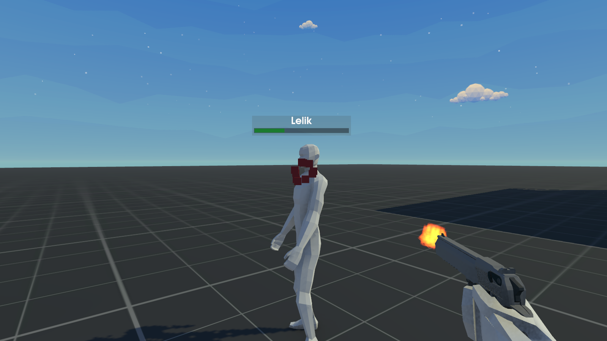
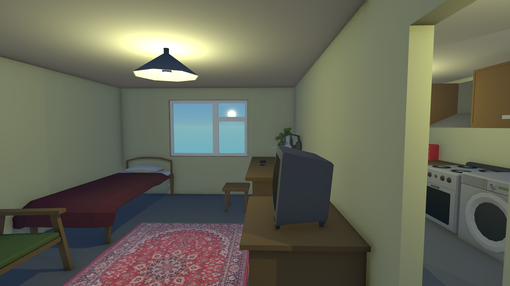

Новая система оружия
Мы добавили систему стрельбы, оружия и много прочего:
- Разные режимы стрельбы
- Эффекты попадания
- Функциональный скрипт, для добавления различных оружий
Интерьеры зданий
- Добавлена система, позволяющая заходить в некоторые здания
- Внутри зданий можно строить и взаимодействовать с объектами
- Реализована система сохранения изменений в интерьерах
Прочие улучшения
- Улучшенная физика объектов
- Обновленный HUD здоровья
- Модель старого персонажа была изменена
- Оптимизация производительности

Новая система оружия в действии

Пример интерьера здания